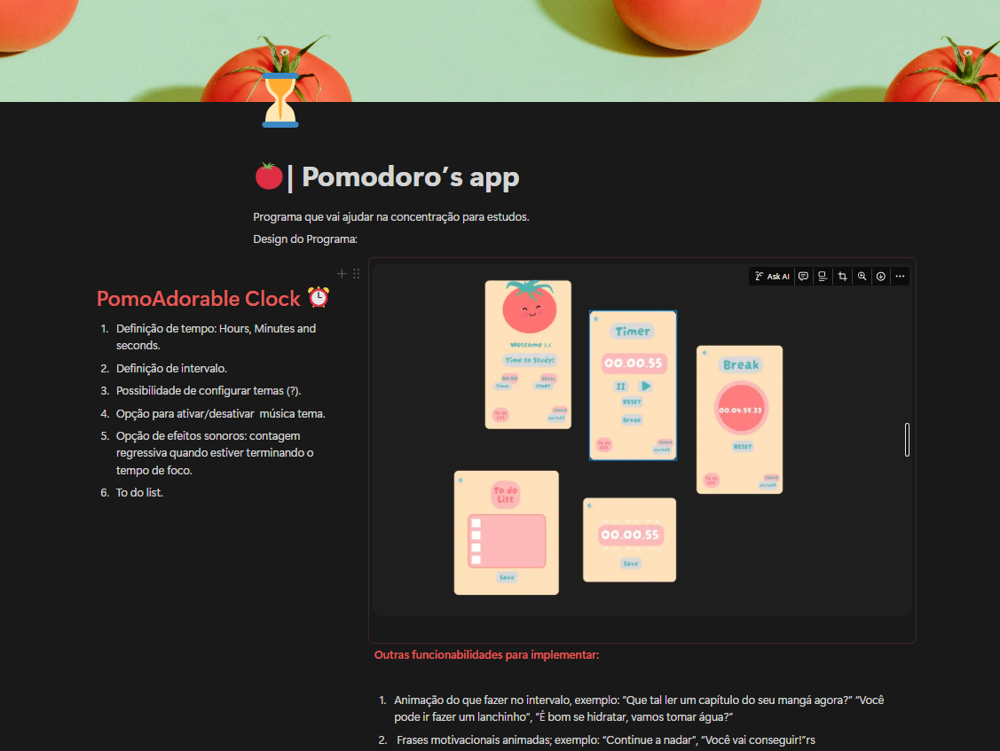

Projeto 1: PomoAdorable: Produtividade com Personalidade!
Nosso objetivo é ir além de um simples cronômetro. Transforme a concentração em um hábito. Estude de forma mais inteligente!
Descrição Geral: Em um mundo repleto de distrações, manter o foco profundo é a chave para o aprendizado e a produtividade. O PomoAdorable é um aplicativo de gestão de tempo e concentração que foi concebido para ser um parceiro de estudos que não apenas gerencia seu tempo, mas também cuida da sua motivação e saúde mental, garantindo que as pausas sejam tão eficazes quanto os períodos de foco.
